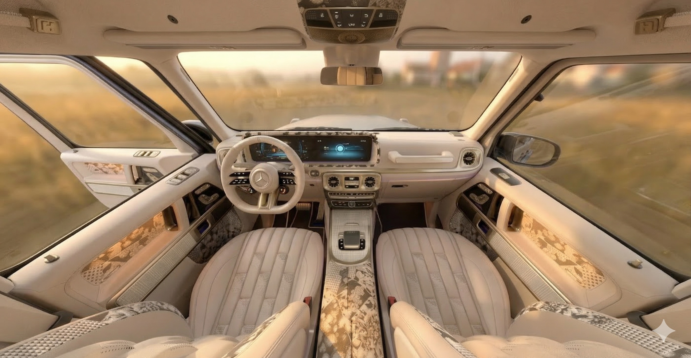
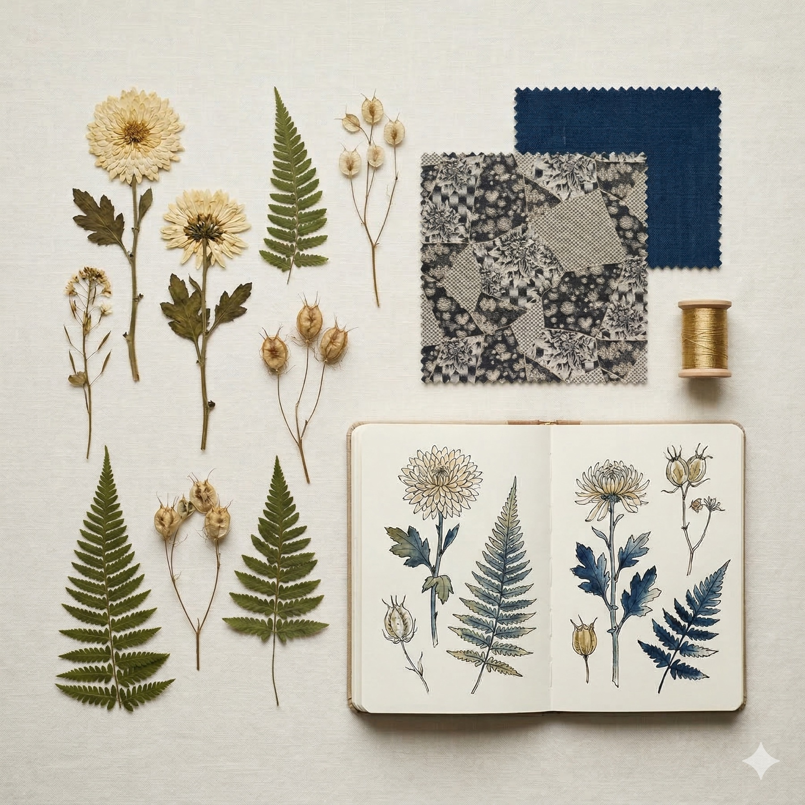
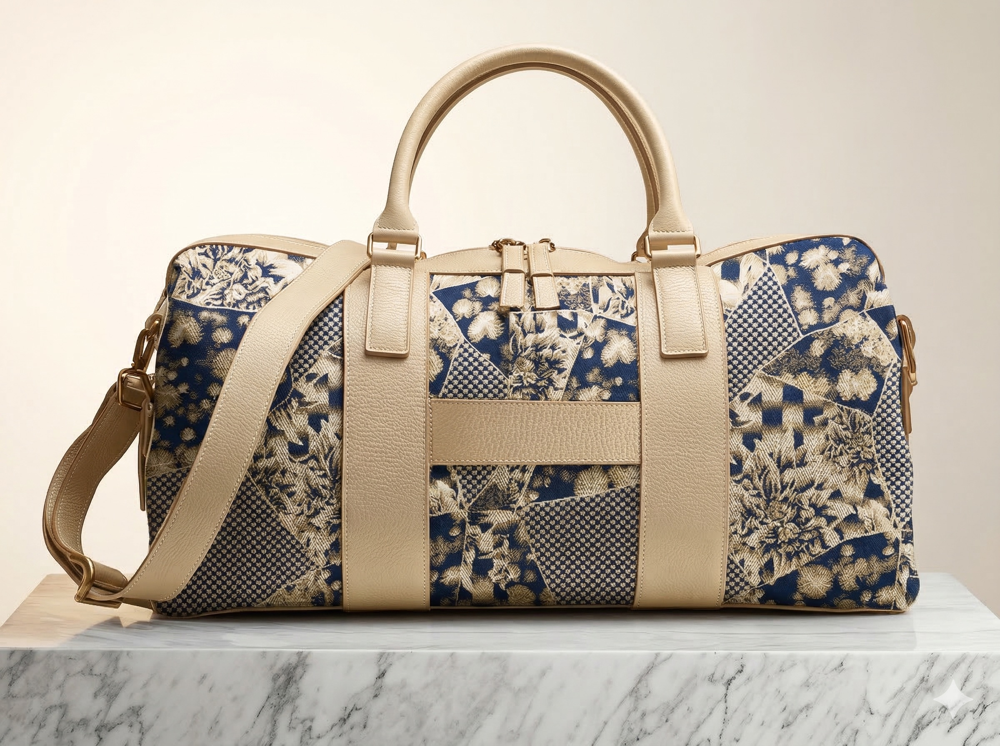
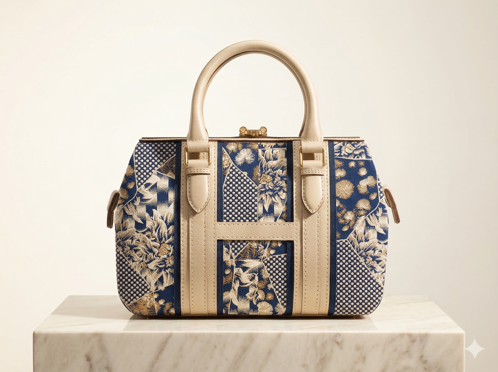
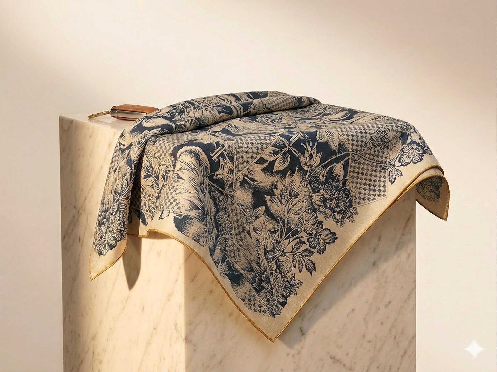
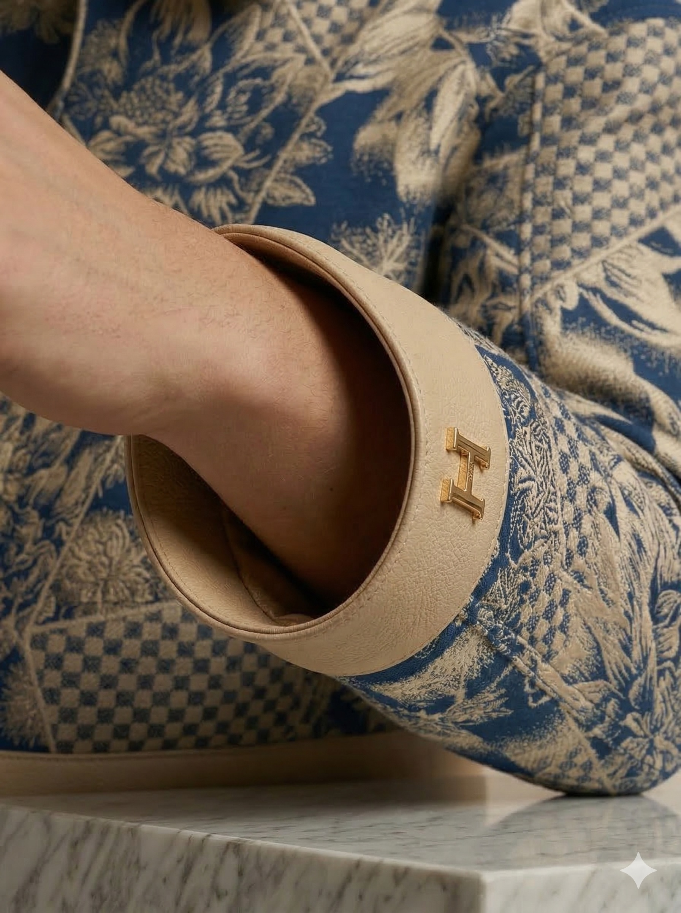

Accessories Partner Briefing
1. About HOF
HOF is a luxury fashion house that creates seasonal collections for the Mercedes-AMG G-Class. Each season has a cultural theme, a material palette, and a curated set of accessories that extend the car’s identity into the world of the connoisseur. We operate at the intersection of haute couture and automotive Manufaktur.
What We Mean by “Couture”
In the fashion world, haute couture is a legally protected designation in France. A true couture house must be approved by the Fédération de la Haute Couture, present collections during Paris Couture Week, and demonstrate that each garment involves substantial handcraft — often 100+ hours of skilled work. Only a handful of houses hold this status: Chanel, Dior, Givenchy, Valentino, and a few others.
HOF does not claim to be an accredited haute couture house. What we do claim is a couture mindset — the same obsessive attention to material, craft, and narrative that defines the best of fashion, applied to the automotive world. In our context, “Car Couture” means:
- Material as protagonist. The botanical jacquard is woven, never printed. The indigo is fermented, never dyed synthetically. Every material has a provenance and a story worth telling.
- Handcraft over automation. Interior elements are hand-finished in our Atelier in Sindelfingen. Accessories should reflect the same level of considered making — a journalist should be able to listen to five minutes of explanation about how something was made, and be genuinely fascinated.
- Collection thinking. Every piece belongs to a seasonal collection with a cultural theme. It is part of a whole — the car, the accessories, the story. Nothing exists in isolation.
- Prêt-à-porter logic for production. While the showpieces for the press launch may be more expressive (one-off, statement pieces, closer to couture in ambition), the production collection should follow prêt-à-porter principles: wearable, purchasable, repeatable — but with visible craft and a clear connection to the cultural narrative.
Two Tiers of Product
| Tier | Purpose | Characteristics |
|---|---|---|
| Showpiece / Editorial | Press launch, photography, media moments | More expressive, closer to couture ambition. Can be more radical, more architectural. One-off or very limited. The piece that makes journalists write. Japanese-Parisian silhouette — structured, open neckline, neither conservative nor overtly sexy. Statement without screaming. |
| Collection / Prêt-à-porter | Purchasable by connoisseurs | A refined, wearable version of the showpiece. 95% the same design language, adapted for daily life. Small-batch production (10–30 units). The piece that customers actually buy and wear. Must work outside the car — in a restaurant, at Art Basel, on a terrace in Dubai. |
The Audience
HOF connoisseurs are typically European, GCC, or CIS-based. High net worth. Fashion-aware — they know the difference between brands, even if they are not from the fashion industry. Their partners are often deeply connected to the fashion world. The accessories must appeal to both: the person who buys the car and the person who wears the collection alongside it.
The long-term ambition: someone buys the jacket or the bag without buying the car. The collection becomes desirable independently — a gateway to the brand, not an afterthought to the vehicle.
2. The Kinsō Collection
Kinsō (金装) means “golden attire” in Japanese — the art of adorning the surface to reveal the soul within. The collection is rooted in the Nishijin-ori silk-weaving tradition of Kyoto, where botanical jacquard textiles have been woven for over five centuries.
Cultural DNA
- Origin: Japanese textile tradition meets Parisian couture composition
- Material hero: Botanical jacquard — woven, never printed
- Colour world: Silk Gold (warm cream) + Aizome Blue (deep fermented indigo)
- Craft reference: Nishijin-ori weaving (Kyoto), Aizome indigo dyeing (Tokushima)
- Silhouette: Japanese-Parisian — structured yet fluid, never loud
The Fabric — Botanical Jacquard
This is the signature textile of the Kinsō collection. It is woven (not printed) with botanical motifs drawn from Edo-period illustration. The fabric is used across the car interior (seats, door panels, headliner) and must be the connecting thread across all accessories.
Botanical jacquard — woven on Nishijin-ori principles. Note the geometric H-pattern grid combined with organic botanical motifs. Dark ground with cream/gold flora. Click image to open full resolution.
Fabric on the Seat
Interior seat detail showing fabric integration: cream leather with botanical jacquard inserts, perforated H-pattern centre panel, illuminated HOF logo on headrest.
Colour Palette
| Colour | Reference | Usage |
|---|---|---|
| Silk Gold | Warm cream — the colour of first light on raw silk | Primary leather, exterior upper body, lining |
| Aizome Blue | Deep fermented indigo — from Japanese aizome tradition | Accent leather, exterior lower body, contrast elements |
| Gold Hardware | Warm gold — never chrome, never silver | All metal hardware: zips, clasps, buckles, H-logo |
| Deep Black | Rich black for contrast | Jacquard ground, interior accents |
3. The Vehicle — Kinsō

HOF G · V — Kinsō · Silk Gold & Aizome Blue · Salon Silhouette · Cleaned & Coach Doors



4. Brand Elements — Logos & Pattern
HOF Figurative Mark (H)
The H is a pure geometric form — two vertical bars connected by a horizontal bar. No serifs, no embellishments. It appears embossed, etched, or debossed on hardware, leather, and textile elements throughout the collection.


HOF Pattern
The HOF pattern is derived from the H-mark geometry. It can be used as a lining, embossing texture, or jacquard weave element on accessories. Always subtle — it should reward close inspection, never announce itself.
5. Product Brief — Accessories
Phase 1 — Showpieces (Launch Event, April/May 2026)
One-off or very small quantity pieces for the press launch. These define the creative direction. Production quality required, but no serial production MOQs.
| Item | Description | Materials | Target Price (Retail) |
|---|---|---|---|
| Weekender Bag | Travel bag, structured form. Large enough for a weekend. Japanese-Parisian aesthetic. | Aizome Blue leather body + botanical jacquard panels. Gold H-clasp hardware. | €4,000–6,000 |
| Men’s Jacket | Fitted leather jacket with jacquard inserts. Couture quality, high-end cut. Japanese-meets-European silhouette. | Aizome Blue leather + botanical jacquard shoulder/back panels. Gold zip. | €5,000–8,000 |
| Women’s Jacket | Cropped or boxy cut. Could incorporate Japanese denim if appropriate (as discussed). Fashion-forward. | Botanical jacquard + leather trim. Gold hardware. | €4,500–7,000 |
| Silk Scarf | Large format scarf. The botanical motif printed/woven on silk. Can be worn or used as interior accent. | Silk with botanical motif in Silk Gold & Aizome Blue palette. | €800–1,500 |
| Doctor’s Bag | Compact structured bag, vintage doctor’s bag form. H-clasp closure. | Botanical jacquard body + Silk Gold leather trim. Gold hardware. | €3,000–4,500 |
| Driving Gloves | Unlined or silk-lined. Perforated palm, jacquard insert on back. | Cream leather + botanical jacquard. Gold H snap. | €600–1,200 |
| Blanket / Throw | Cashmere or high-end wool blend. Botanical motif woven in. For rear seats or lifestyle use. | Cashmere/wool in Silk Gold & Aizome Blue palette. | €1,200–2,000 |
Phase 2 — Serial Production (Following Launch)
Based on demand from the launch event, selected items will move into small-batch serial production. Expected initial quantities: 10–30 units per item. Quality must match showpieces exactly.
6. Current Concept References
These are AI-generated concept images showing the creative direction. Final products will differ — these illustrate the aesthetic intention, material combinations, and styling language.






Detail References


7. Design Guidelines
Do
- Use the botanical jacquard as a hero element — it should be visible, not hidden
- Combine with high-quality leather in Silk Gold (cream) or Aizome Blue (indigo)
- All hardware in warm gold — zips, clasps, buckles, snap buttons
- The HOF H-mark may appear as embossing, debossing, or gold hardware
- Japanese-Parisian aesthetic: structured but fluid, precise but warm
- Think couture presentation: unboxing, tissue paper, quality packaging
- Consider Japanese denim or indigo-dyed textiles as complementary materials
Don’t
- Never make it look like branded merchandise — no large logos, no “car brand” feeling
- Never use chrome, silver, or cold-toned hardware
- Never use synthetic fabrics or polyester linings
- Never use the botanical pattern as a print — it must be woven or embroidered
- Never compromise on materials to reduce cost — quality defines the brand
- Avoid anything that could be mistaken for Porsche Design, BRABUS Style, or generic automotive lifestyle
8. Next Steps & Timeline
| Step | Action | Timeline |
|---|---|---|
| 1 | HOF sends fabric sample + brand assets (logos, pattern, colour references) | This week |
| 2 | Partner presents initial concept & short quote | End of week / early next week |
| 3 | Review call — align on styles, materials, approach | Monday / Tuesday |
| 4 | Prototype development (showpieces) | 4–5 weeks |
| 5 | Press launch / presentation | Late April / Early May 2026 |
| 6 | Serial production (if demand confirmed) | 3–4 months from approval |
9. Digital Asset Download
All brand assets, fabric references, vehicle photos, and accessory concepts are available for download as a single package.
Contains 40 files across 5 folders
| Folder | Contents | Formats |
|---|---|---|
| 01_Logos_EPS | H-Mark, Wordmark, Combination Vertical, Combination Special — positive & negative versions | EPS, AI, PNG |
| 02_Pattern | HOF geometric pattern (derived from H-mark) | EPS, PNG |
| 03_Fabric_HiRes | Botanical jacquard full pattern, macro detail, material palette, Nishijin loom, Aizome dyeing | JPG (high-res) |
| 04_Vehicle_Reference | Side profile, interior front/rear, interior details, Coach Doors, rear lounge | JPG (high-res) |
| 05_Accessory_Concepts | Weekender, Doctor’s Bag, Men’s/Women’s Jacket, Silk Scarf, Driving Gloves, H-Clasp detail, textile macro | JPG |
Physical Materials — To Be Sent Separately
- Fabric sample: Botanical jacquard swatch — approx. 50×50 cm
- Leather samples: Silk Gold (cream) and Aizome Blue (indigo)
10. Contact
HOF
Atelier Sindelfingen
Please direct all questions and material requests to the HOF project team.
HOF · Confidential · This document is intended for the recipient only.